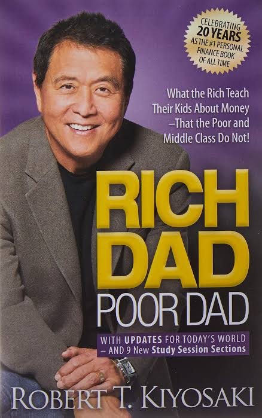

আমি আজ আপনাদের এমন কিছু কারন বলব যার জন্য কিছু মানুষ সারা জীবন মধ্যবিত্ত বা গরিব থেকে যায়। কিন্তু কিছু মানুষ গরিব থেকে ধনী হয়ে যায়।
আমরা শিক্ষা, চাকরি এবং টাকা পয়সা অর্জন করার জন্য ১৫ থেকে ২০ বছর পড়াশোনা করি। কিন্তু সব থেকে বড় ভাবনার বিষয় হল এই সময়ই আমরা কখনও কিভাবে ধনী হওয়া যায় তা নিয়ে ভাবি না। ধনী হওয়ার শিক্ষা না দেওয়া হয় স্কুল-কলেজে, না দেওয়া হয় আমাদের পরিবার থেকে – বিশেষ করে গরীব এবং মধ্যবিত্ত পরিবারে।
এজন্য আমি আজ আপনাদের সাথে এই বিষয়ে Robert T. Kiyosaki র লেখা বিখ্যাত বই Rich Dad Poor Dad থেকে কিছু কথা আপনাদের সাথে শেয়ার করব।
রবার্ট যখন ৯ বছরের ছিল তখন তার স্কুলের বন্ধুরা Picnic করেছিল। কিন্তু রবার্টের বন্ধুরা রবার্ট কে আমন্ত্রণ করেনি। কারণ সে ছিল গরিব। এই ঘটনা রবার্টকে এতটাই দুঃখ দেয় যে রবার্ট ভেবে নেয় তাকে ধনী হতেই হবে।
রবার্টের দুজন বাবা ছিলেন। একজন রবার্টের নিজের বাবা। যাকে রবার্ট Poor Dad অর্থাৎ গরিব বাবা বলেন। অন্যজন ছিলেন রবার্টের বন্ধুর বাবা যাকে রবার্ট নিজের আদর্শ মনে করতেন এবং Rich Dad অর্থাৎ ধনী বাবা বলেন।রবার্টের গরীব বাবা একজন শিক্ষক ছিলেন যিনি ৪ বছরের Graduation ২ বছরের ও কম সময়ে শেষ করেন এবং যার কাছে ছিল P.Hd র মতো Degree ।আর তার ধনী বাবা পড়াশোনা করেছিল মাত্র অষ্টম শ্রেণী পর্যন্ত এবং তিনি ছিলেন একজন ব্যবসায়ী।
রবাটের এই বাবার চিন্তাধারা একদম ভিন্ন ছিল।
তার গরীব বাবা তাকে বলতেন যে রবার্ট ভালোভাবে পড়াশোনা করো যেন তুমি কোন ভাল চাকুরী পাও।
অন্যদিকে ধনী বাবা বলতেন যে রবার্ট ভালোভাবে পড়াশোনা করো যেন তুমি একদিন নিজের কোন কোম্পানি খুলে অন্যদের চাকরি দিতে পারো। তার গরীব বাবা বলতেন যে টাকাপয়সা সমস্ত খারাপ জিনিস এর মূল কারণ।
অন্যদিকে ধনী বাবা বলতেন যে টাকাপয়সা না থাকা সমস্ত খারাপ জিনিস এর মূল কারণ। তার গরীব বাবা বলতেন এমন কোনো দামি জিনিস কেনার বিষয়ে আমাদের ভাবা উচিত নয় যা আমরা কিনতে পারব না। কারণ আমরা গরীব।
অন্যদিকে তার ধনী বাবা বলতেন যে যদি তুমি কোনো দামি জিনিস কিনতে চাও তবে তোমাকে ভাবতে হবে কিভাবে তুমি এত বেশি রোজগার করতে পারবে যার ফলে তুমি তা কিনতে পারবে। রবার্ট তার এই দুই বাবার কথা মন দিয়ে শোনে ও বিশ্লেষণ করে এবং সিদ্ধান্ত নেয় কোন বাবার কথা তার শোনা উচিত।
আপনার কি মনে হয় রবার্ট কোন বাবার কথা শুনেছিল ??
আপনি একদম ঠিক ধরেছেন। রবার্ট তার ধনী বাবার কথা শুনে ছিল এবং তাকেই নিজের আদর্শ হিসাবে বেছে নিয়েছিল।
রবার্টের ধনী বাবা রবার্টকে কি শিখিয়েছিলেন ?
রবার্টের ধনী বাবা রবার্টকেকে যে কথাগুলো শিখিয়েছিলেন তার মধ্যে কয়েকটি এই রকম –
আমাদের মধ্যে অনেকেই শুধু চাকরি করতে চাই। কারন আমরা মনে করি পড়াশোনা করার পর কোন সরকারি বা বেসরকারি চাকরি পেয়ে গেলে আমাদের জীবন নিরাপদ হবে। এই একই শিক্ষা আমরা আমাদের পরিবার এবং সমাজের কাছ থেকে পায়। কিন্তু চাকরি করতে করতে একসময় আমরা টাকা-পয়সার ক্রীতদাসে পরিণত হয় এবং আমরা টাকার জন্য কাজ করতে শুরু করি।
টাকা পয়সা না পাওয়ার ভয় আমাদের চাকরি ছাড়া অন্য কিছু ভাবার সুযোগ ই দেয় না।
তারা ভাবে বেতন বাড়ার সাথে সাথে তারা ধনী হবে। কিন্তু বাস্তবে তা হয় না। বেতন বাড়লেও তারা পূর্বের মত গরীব ই থেকে যায়।
এর কারণ হচ্ছে বেতন বাড়ার সাথে সাথে তারা তাদের খরচ ও বাড়িয়ে দেয়। যেমন – দামী জুতো, জামা-কাপড়, গহনা, Mobile, TV, Bike, Car, আসবাবপত্র ইত্যাদি ইত্যাদি।
এভাবেই তারা তাদের সারাজীবন কাটিয়ে দেয়। অপরপক্ষে ধনী মানুষ টাকার জন্য কাজ করে না। টাকা কে দিয়ে নিজের জন্য কাজ করান।
ধনী মানুষ কাজ করে কোন নতুন দক্ষতা বা Skill শেখার জন্য যার দ্বারা ভবিষ্যতে টাকা কে নিজের জন্য কাজ করাতে পারেন।
ভাবুন একবার যদি আমরা টাকা কে দিয়ে কাজ করানো শিখে যায় তাহলে আমরা যখন ঘুমোবো, ঘুরে বেড়াবো যায় করি টাকা আমাদের ক্রীতদাস হয়ে দিনরাত আমাদের জন্য কাজ করবে এবং আমাদেরকে ধনী ব্যক্তিতে পরিণত করবে।
কেবলমাত্র টাকা রোজগার করার ভয় থেকে মুক্ত হয়েই আমরা টাকার আসল লাভ উঠাতে পারব।
আপনি স্বল্প মূলধন দিয়ে কোন লাভজনক ব্যবসা শুরু করতে পারেন যার ফলে আপনার টাকা আপনার জন্য কাজ করা শুরু করে দেবে।
আপনার চারিদিকে একটু ভালোভাবে লক্ষ্য করলে দেখবেন যারাই ধনী তারা কেউ চাকরি করে ধনী হয়নি। যারা ধনী হয়েছে তারা ব্যবসা করে হয়েছে অথবা চাকরি থেকে আসা টাকা অন্য কোন জায়গায় কাজে লাগিয়ে বা ব্যবসা করে ধনী হয়েছে।
আমি কিন্তু একবারও বলিনি যে যারা চাকরি করে জীবন ধারণ করে তারা সুখী নয় বা আমি একবার ও আপনাদের চাকরি করতে নিষেধ করিনি।
আমি এই কথাগুলো শুধু তাদেরকে বলছি যারা নিজেকে কোনো চাকরি বা গন্ডির মধ্যে সীমাবদ্ধ রাখতে না চেয়ে বড় কিছু করতে চাই।
আমি শুধু বলতে চেয়েছি ধনী হতে গেলে টাকার জন্য কাজ করলে হবে না, টাকা কে দিয়ে কাজ করাতে হবে।
আরও পড়ুন: কি ভাবে অবচেতন মনের শক্তিকে নিয়ন্ত্রণ করবেন?
২] সম্পত্তি এবং দায়-দায়িত্বের মধ্যে পার্থক্য
Robert T Kiyosaki র ভাষায় “Differentiate between Assets and Liabilities“.
সর্বপ্রথম জেনে নিই সম্পত্তি এবং দায় দায়িত্ব কি?
সম্পত্তি আমাদের জন্য টাকা তৈরি করে। যেমন কোন ব্যবসায় অংশীদারি, কোন কোম্পানির শেয়ার বা এমন কোনো Real Estate Property যা থেকে আমরা বাড়িভাড়া পায় ইত্যাদি।
অন্যদিকে দায়-দায়িত্ব সম্পত্তির একদম বিপরীত যা আমাদের পকেট থেকে টাকা পয়সা বার করে নেয়। যেমন – দামি ফোন, দামি গাড়ি, বড় বাড়ি – যেগুলো প্রথমে কেনার সময়েও খরচ হয় এবং পরে সেগুলো maintain করতেও খরচ হয়।
আর আপনি যদি সেগুলো কিস্তিতে নেন তবে আপনার দায়-দায়িত্ব দ্বিগুণ হয়ে যাবে। অর্থাৎ প্রথমে মাসে মাসে কিস্তির দায় এবং সেগুলোর maintenance খরচ।
মধ্যবিত্ত শ্রেণীর মানুষ এই ভুলটাই করে। তারা দায়-দায়িত্ব কেনে সম্পত্তি ভেবে।
অপরপক্ষে ধনী ব্যক্তি সম্পত্তি তৈরি করে এবং যতটা সম্ভব দায় দায়িত্ব এড়িয়ে চলে।
৩] গরিব, মধ্যবিত্ত ও ধনী ব্যক্তির মধ্যে পার্থক্য
উপরোক্ত তিন শ্রেণীর মানুষ টাকা-পয়সার লেনদেন এইভাবে করে।
a) গরিব মানুষের কাছে চাকরি থেকে টাকা-পয়সা আসে যা তারা দৈনিক জীবনযাপনের অপরিহার্য দ্রব্য কিনতে খরচ করে।
b) মধ্যবিত্ত শ্রেণীর মানুষের কাছে ও চাকরি থেকে টাকা-পয়সা আসে যা তারা জীবন ধারণের অপরিহার্য দ্রব্য কিনতে এবং বেঁচে থাকা টাকার দ্বারা দায়-দায়িত্ব মেটাতে খরচ করে।
c) অন্যদিকে ধনী ব্যক্তির কাছে সম্পত্তি এবং চাকরি থেকে টাকা পয়সা আসে যার মাধ্যমে তারা অপরিহার্য প্রয়োজনীয়তা মেটানোর পর বেঁচে থাকা টাকার সাহায্যে সম্পত্তি তৈরি করে যা ভবিষ্যতে তাদের আরও অধিক সম্পত্তি তৈরি করতে সাহায্য করে।
এইভাবে ধনী ব্যক্তি আরো ধনী হয় এবং গরীব আরো গরীব হয়।
সুতরাং ধনী হওয়ার জন্য আমাদের ও উচিত সম্পত্তি তৈরি করতে মন দেওয়া এবং দায় দায়িত্ব থেকে দূরে থাকা।
৪] বিকল্প আয়ের পথ (Passive Income Stream) তৈরী করুন
Robert T Kiyosaki র ভাষায় “Built Passive Income Stream”.
ধনী ব্যক্তি বিকল্প আয়ের পথ তৈরি করে অর্থাৎ এমন ব্যবস্থা যাতে তারা সক্রিয় থাকুক আর না থাকুক তবু টাকা আয় হবে।
দুই রকম ভাবে টাকা আয় করা যায় –
a) সক্রিয় আয় (Active Income) – যখন আপনি সব সময় টাকার জন্য কাজ করেন। যেমন কোনো চাকরি।
b) বিকল্প আয় (Passive Income) – আপনি সক্রিয় না থাকলেও টাকা আপনার জন্য কাজ করবে।
এই দুটি বিষয় ভালভাবে বোঝার জন্য নিচের গল্পটি মন দিয়ে পড়ুন।
একটি গ্রাম ছিল যেখানে জল ছিলনা। কিন্তু কিছুটা দূরে একটি নদী ছিল। দুজন ব্যক্তি ভাবলেন নদী থেকে জল নিয়ে এসে গ্রামের বিক্রি করবে।কিছুদিন তাদের এই ব্যবসা চলতে থাকল।তাদের মধ্যে একজন এই ভাবেই কাজ চালাতে থাকল। অন্যজন কিছু সময়ের জন্য তার কাজ বন্ধ করে জমানো টাকা দিয়ে নদী থেকে তার বাড়ি পর্যন্ত পাইপ লাইন তৈরি করে এবং তারপর সেই দ্বিতীয় ব্যক্তিটি বাড়ি থেকেই জল বিক্রি করা শুরু করে। কিছুদিন পর দুজন ব্যক্তি অসুস্থ হয়ে যায়। এর ফলে প্রথম ব্যক্তির কাজ বন্ধ হয়ে যায়। কিন্তু দ্বিতীয় ব্যক্তিটি কিছু টাকার বিনিময়ে একজন কাজের লোক রাখেন যে তার জন্য জল বিক্রি করা শুরু করে। এভাবে তার ব্যবসা চলতে থাকে এবং সে টাকা আয় করতে থাকে।
এর কারণ হলো দ্বিতীয় ব্যক্তি বিকল্প আয়ের পথ তৈরি করে রেখেছিল। যার ফলে তার অনুপস্থিতি ব্যবসার কোন ক্ষতি করতে পারেনি।
Robert T Kiyosaki র লেখা Rich Dad Poor Dad বই এ এরকম আরো অনেক কথা বলা আছে যা আপনাদের ধনী ব্যক্তি হতে সাহায্য করবে।
বিশেষজ্ঞরা বলছেন, this is the next spiritual concept, that shall take the market by storm.
কী সেই স্পিরিচুয়াল কনসেপ্ট যা নিয়ে দুনিয়া আজ তোলপাড়?
ছোট্ট একটা জাপানি শব্দ। ইকিগাই।
শব্দটা ছোট্ট কিন্তু, মানেটা গভীর। এই জাপানি কনসেপ্ট-এর অর্থ হল, ‘জীবনের মূল্য’। জাপানি ভাষায় ‘ইকি’ মানে জীবন আর ‘গাই’ মানে দাম বা মূল্য। যোগ করলে দাঁড়ায়, জীবনের মূল্য। একটু অন্য ভাবে আপনি এই জিনিসটাকে বলতেই পারেন, ‘বেঁচে থাকার কারণ’। জাপানে এটাকে সে ভাবেই দেখা হচ্ছে। শুধু, এই দামটা অন্য কেউ ঠিক করে দেবে না, করবেন আপনি নিজে। আপনার জীবনের কতটা মূল্য, তা আপনিই ঠিক করবেন, আর সেটা তখনই সম্ভব, যখন আপনি জানেন যে আপনি ঠিক কেন বেঁচে আছেন? যদি এই প্রশ্নের জবাব আপনার জানা থাকে, তা হলে আপনি নিজেই বুঝতে পারবেন, আপনার জীবনের দামটা কোথায় এবং কতটা সেই দাম।
আমাদের অনেকের মনেই নানা সময় কিছু প্রশ্ন ঘুরপাক খায়। আর কত টাকা রোজগার করলে আরও একটু ভালো থাকা যাবে? কোন জিনিসটা হাতের নাগালে পেলে মনে হবে, হ্যাঁ, অ্যাদ্দিনে একটা কাজের কাজ হল বটে! কোন শখটা মিটলে চেনা-পরিচিতরা আমার দিকে একটু হিংসে নিয়ে তাকাবে?
ঠিক এই সব প্রশ্নের সামনেই এসে দাঁড়িয়েছে ইকিগাই। বলা ভাল, উল্টে আপনার দিকেই একটা প্রশ্ন ছুড়ে দিচ্ছে। ওই যে প্রশ্নটা একটু আগেই বলা হল, সেটা। আপনি জানেন, আপনি কেন বেঁচে আছেন? কিন্তু শুধুমাত্র ব্যাংক ব্যালেন্স-এর জন্য? ডুপ্লেক্স ফোর বিএইচকে-র জন্য? প্রিমিয়াম সেডানের জন্য? একটু মন দিয়ে ভেবে বলুন তো, কী আপনার ভালো থাকার পাসওয়ার্ড?
ইকিগাই জানাচ্ছে, গোটা দুনিয়া জুড়েই জীবনকে দেখার চোখটা পাল্টে যাচ্ছে। নতুন কিছু না, আগেও নানা সময় পারস্পেক্টিভ বদলেছে। কিন্তু, এখন এই ঝকঝকে টোয়েন্টি ফার্স্ট সেঞ্চুরিতে মানুষের মনে জায়গা করে নিচ্ছে নতুন একটা ভাবনা। বিয়ন্ড ওয়েলথ! চোখধাঁধানো সম্পদই শেষ কথা নয়, তার বাইরে গিয়ে ভাবো। নিজেই ভেবে দেখো, কীসের জন্য বেঁচে আছ তুমি? অ্যাকাউন্টে টাকা, পশ এলাকায় বাড়ি, দরজায় ঝকঝকে গাড়ি... সারাক্ষণ এই সবের কথা ভাবতে গিয়ে আসলে নিজের জীবনটাই কোথাও হারিয়ে যাচ্ছে না তো? আর, জীবনটাই যদি হারিয়ে যায়, তা হলে আর জীবনের দামটাই বা কী থাকল?
আপনার সামাজিক পরিচয়, অর্থাৎ, ওয়ার্ক আর পার্সোনাল লাইফকে জুড়ে দিয়েই আপনার জীবনের রেটিং করছে ইকিগাই। অর্থাৎ আপনি জীবনে যা-ই করুন, যখনই করুন— তা সে অফিসের কাজ হোক, নিজের ব্যবসা হোক, বা কোনও শখ পূরণ করা হোক, বন্ধুত্ব হোক, সোশ্যাল ওয়ার্ক হোক, ঘুরে বেড়ানো হোক, সব গিয়ে জড়ো হচ্ছে আপনার ইকিগাই-এর ক্রেডিট স্কোরে।
এই তো ২০১৯-এ সফটওয়্যার ইঞ্জিনিয়ার হেক্টর গার্সিয়া এবং লেখক ফ্রান্সেস মিরালেস জাপানের ওজিমায় গিয়ে একটি সার্ভে চালান। ইকিগাই এবং দীর্ঘ জীবনের মধ্যে আদৌ কোনও পারস্পরিক সম্পর্ক আছে কি না, সেটা নিয়েই ছিল তাঁদের প্রজেক্ট। ওজিমায় একটি গ্রামের মিষ্টি একটা ডাকনামও দেন তাঁরা The Village of Longevity. সেই সব পরীক্ষা-নিরীক্ষার শেষে গার্সিয়া আর মিরালেসের লেখা বই Ikigai : The Japanese Secret to a Long and Happy Life, এখন দিব্যি জনপ্রিয় হয়েছে।
জাপানি সংস্কৃতি বলছে, ইকিগাইয়ের ছায়া আমাদের জীবনে দু’ভাবে পড়ে।
ক, আমাদের প্রত্যেকের মধ্যেই ইকিগাই আছে। জীবনে চলার পথে বাধা বিপত্তি আসবেই, নানা রকম প্রতিকূল পরিস্থিতি আসবে, সে সব অবস্থায় হতেই পারে আপনি নিজের প্রফেশন বদলে ফেললেন, ঠিকানা বদলে ফেললেন, এমনকী, খুব কাছের মানুষটিকেও হয়তো বদলে ফেলতে হল। প্রতি মুহূর্তে বদলাতে থাকা দুনিয়ার সঙ্গে তাল মিলিয়ে আপনিও যখন যে ভাবে নিজেকে বদলাবেন, নতুন কোনও লক্ষ্যের দিকে পা বাড়াবেন, খেয়াল রাখবেন আপনার ইকিগাইও কিন্তু সমান তালে আপনার সঙ্গেই চলবে।
এ বার দুই। আপনি নিজেই আপনার ইকিগাই তৈরি করতে পারবেন। ধরুন, আপনি যে অবস্থায় আছেন, তাতে আপনার ঠিক পোষাচ্ছে না। ভাল লাগছে না। আপনি অন্য কিছু করতে চান। নতুন কিছু। যদি মনের জোরটা বজায় রেখে, নিজের ওপর বিশ্বাস রেখে এগিয়ে যেতে পারেন—ইউরেকা! আপনি আপনার ইকিগাইকে কাছে পেয়ে গেছেন। কারণ, আপনি জেনে গিয়েছেন, আপনার জীবনের মূল্যটা কী।
খটকাটা সেখানেই। আমি কি সত্যিই জানি, আমি কেন বেঁচে আছি? নাকি, অন্যরাই ঠিক করে দিচ্ছে আমার জীবনের নানা রকম প্যারামিটার? এটা হলে সফল, ওটা হলে ব্যর্থ!
ইকিগাই বলছে, আপনার হার্ট যতদিন ধুকপুক করছে, ততদিন আপনিই ঠিক করবেন আপনার জীবনের দাম। অন্য কেউ নয়। আর, সেটা করতে গেলে ওই ‘বিয়ন্ড ওয়েলথ’-এর দিকে যেতে হবে!
না, ইকিগাই আপনাকে অমর করবে না। শুধু বুঝিয়ে দেবে ছোট্ট একটা কথা। এই যে আপনার লাইফ-লং জার্নি, তার ভিতরমহলটা কী রকম। তার জন্য নিজেকে প্রশ্ন করুন। যখন সময় পাবেন, যেখানে সময় পাবেন।
প্রশ্নের জবাব?